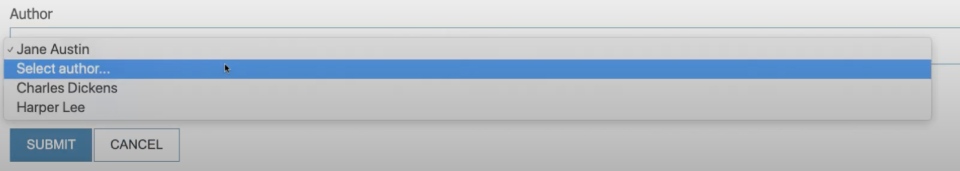

In instances where an end-user submits a form and form validation errors are produced, it's a good practice to repopulate forms with the information that was submitted. Doing so means that the end-user won't have to go through the burden of re-typing everything.
With Trongate, you can repopulate forms by using the post() method. Here's a video, showing you how it all works:
[youtube]{
"headline": "Video Tutorial",
"info": "In this video, we'll take a closer look at how to repopulate forms after there has been a form validation error.",
"videoId":"CFjf1yq4MDk"}
[/youtube]
For those of you who prefer written docs, here's what the video covers.
Our start point for form repopulation is to have a method created that is dedicated to the task of producing an array of posted form fields. Let's call this method _get_data_from_post(). Here's some sample code:
function _get_data_from_post() {
$data["title"] = post("title", true);
$data["description"] = post("description", true);
$data["author_id"] = post("author_id", true);
$data["published"] = post("published", true);
return $data;
}This can then be called from our create() method, like so:
function create() {
$data = $this->_get_data_from_post();
$data["form_location"] = str_replace("/create", "/submit", current_url());
$data["author_options"] = $this->_get_author_options($data["author_id"]);
$data["view_file"] = "create";
$this->template("admin", $data);
}Doing this means that our posted form data is now going to be immediately passed directly into our (create.php) view file. Even in instances where no data has been posted - for example, when a user visits the page for the first time - Trongate will initialise empty strings for each of the form fields. Here's our complete code for create.php:
<h1>Create New Record</h1>
<?= validation_errors() ?>
<div class="card">
<div class="card-heading">
Book Details
</div>
<div class="card-body">
<?php
echo form_open($form_location);
echo form_label("Book Title");
$attr["placeholder"] = "Enter book title here";
$attr["autocomplete"] = "off";
echo form_input("title", $title, $attr);
echo form_label("Description");
echo form_textarea("description", $description, array("placeholder" => "Enter description here"));
echo form_label("Author");
echo form_dropdown("author_id", $author_options, $author_id);
echo "<div>Published: ";
echo form_checkbox("published", 1, $published);
echo "</div>";
echo form_submit("submit", "Submit");
echo anchor("books/manage", "Cancel", array("class" => "button alt"));
echo form_close();
?>
</div>
</div>Let's imagine that somebody arrives on a page for the first time and they are going to be invited to choose an author from a dropdown. Initially, our dropdown will present 'Select author...' as an option on the dropdown. That's good! It's good because it lets the user know the purpose of the dropdown menu.
However, if the user chooses an author, submits the form and then a validation error is found, the dropdown menu will still have 'Select author...' as an option that can be selected. This is an irritation.

HOW TO SOLVE THIS
There are a variety of different ways to solve this kind of problem. One way is to modify our _get_author_options() method. Since we now have _get_data_from_post() being invoked, every time the form is presented, it means that we have access to a value that represents the currently selected author_id.
This gives us an opportunity to pass this value into _get_author_options(), as an argument.
$data["author_options"] = $this->_get_author_options($data["author_id"]);Now, we can modify our _get_authors_options() method so that it now accepts a $selected_author_id variable. Then, with a simple IF statement, we can only have 'Select author...' as an option whenever the section author_id is an empty string.
function _get_author_options($selected_author_id) {
$rows = $this->model->get("last_name", "authors");
if ($selected_author_id == "") {
$options[""] = "Select author...";
}
foreach($rows as $row) {
$options[$row->id] = $row->first_name." ".$row->last_name;
}
return $options;
}This means that users won't be bothered with having 'Select author...' as an option in situations where they have already selected an author.
Our complete code for Books.php should now look like this:
<?php
class Books extends Trongate {
function create() {
$data = $this->_get_data_from_post();
$data["form_location"] = str_replace("/create", "/submit", current_url());
$data["author_options"] = $this->_get_author_options($data["author_id"]);
$data["view_file"] = "create";
$this->template("admin", $data);
}
function submit() {
$submit = post("submit");
if ($submit == "Submit") {
$this->validation_helper->set_rules("title", "book title", "required|min_length[3]|max_length[75]");
$this->validation_helper->set_rules("description", "book description", "required");
$this->validation_helper->set_rules("author_id", "author", "required");
//run the validation tests
$result = $this->validation_helper->run(); //returns true or false
if ($result == true) {
echo "well done";
} else {
$this->create();
}
}
}
function _get_author_options($selected_author_id) {
$rows = $this->model->get("last_name", "authors");
if ($selected_author_id == "") {
$options[""] = "Select author...";
}
foreach($rows as $row) {
$options[$row->id] = $row->first_name." ".$row->last_name;
}
return $options;
}
function _get_data_from_post() {
$data["title"] = post("title", true);
$data["description"] = post("description", true);
$data["author_id"] = post("author_id", true);
$data["published"] = post("published", true);
return $data;
}
}